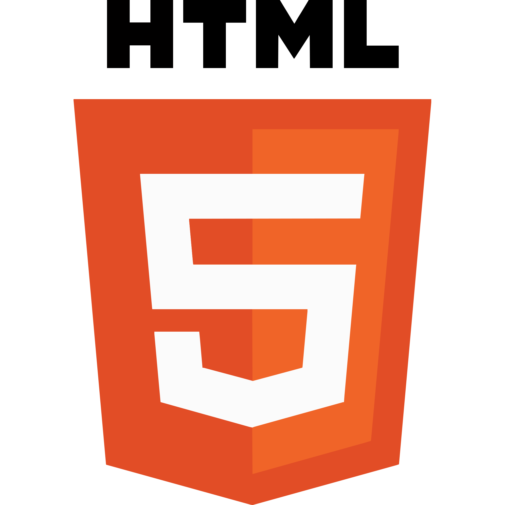
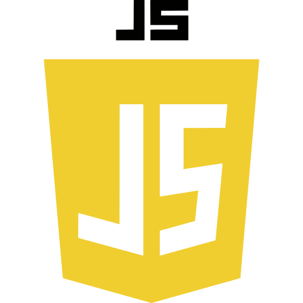
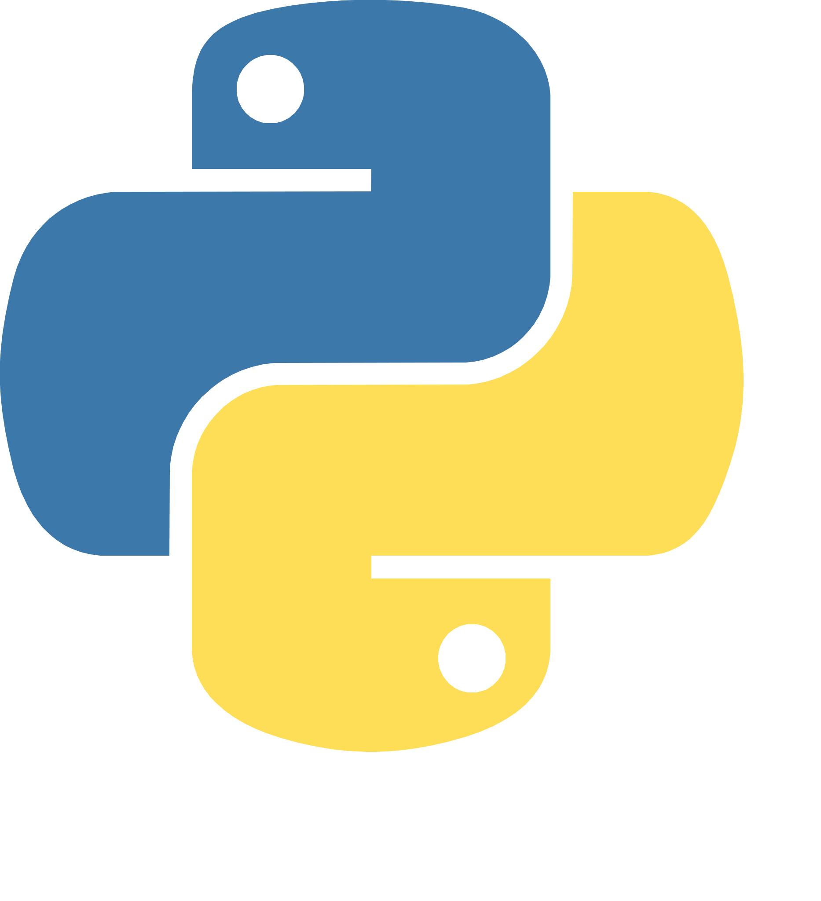
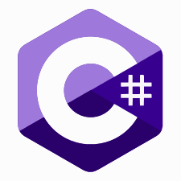
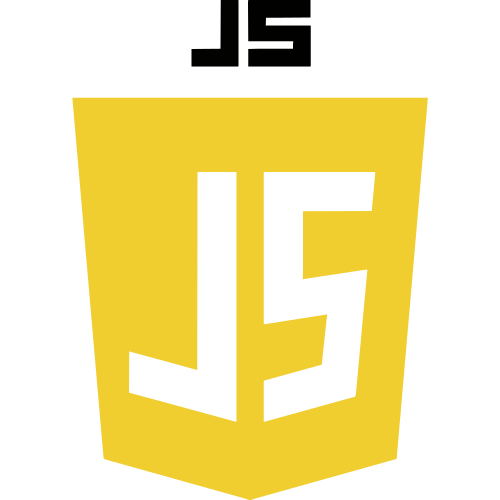
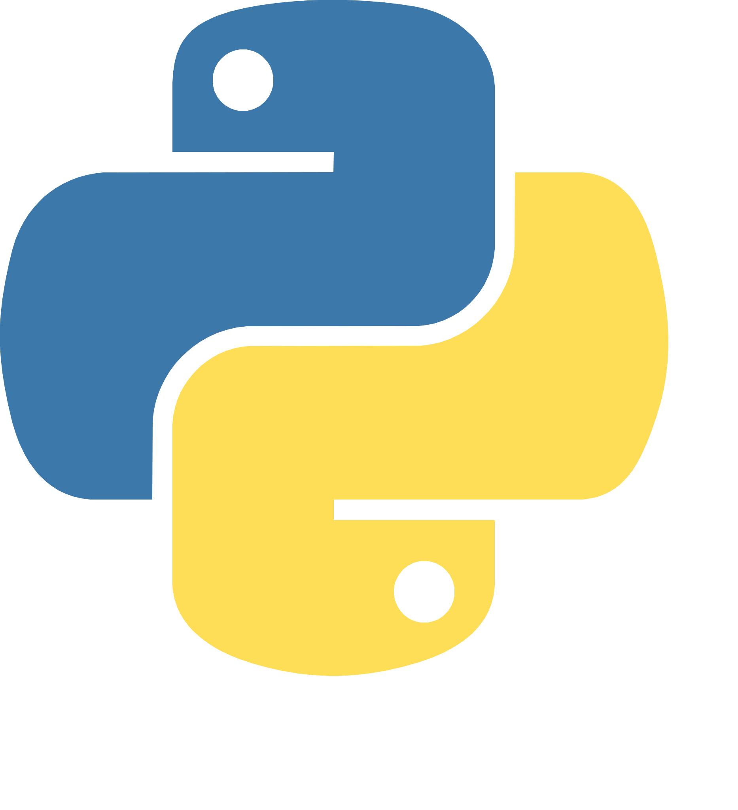
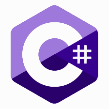
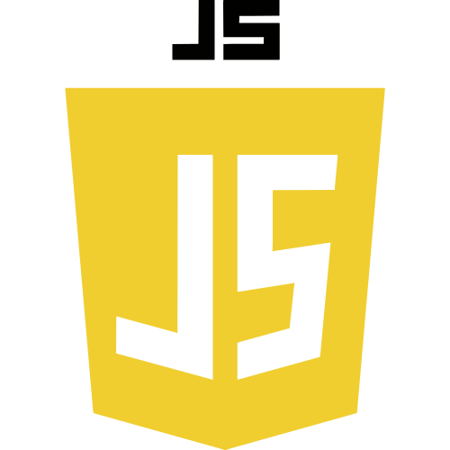
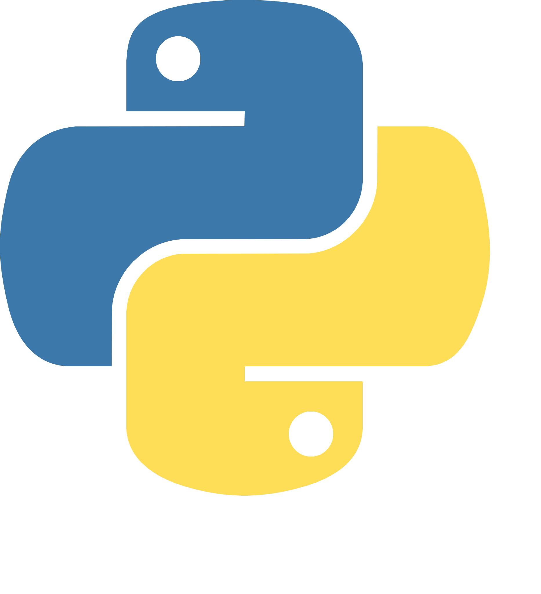
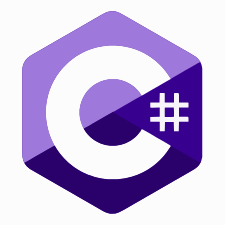

Minhas Experiências

 










Tenho experiência com desenvolvimento web front-end, já desenvolvi sistemas responsivos e de fácil uso para o cliente.
Já realizei manutenções em sistemas de comércios e sistemas de uso próprio para o layout estar de acordo com a experiência do usuário.
Já criei sistemas web para uso rápido de gestão de estoque pensando na usabilidade de pessoas com deficiências físicas.
Desenvolvi interfaces que atendem critérios de acessibilidade, como leitores para deficientes visuais e tradutores de vídeos para deficientes auditivos.